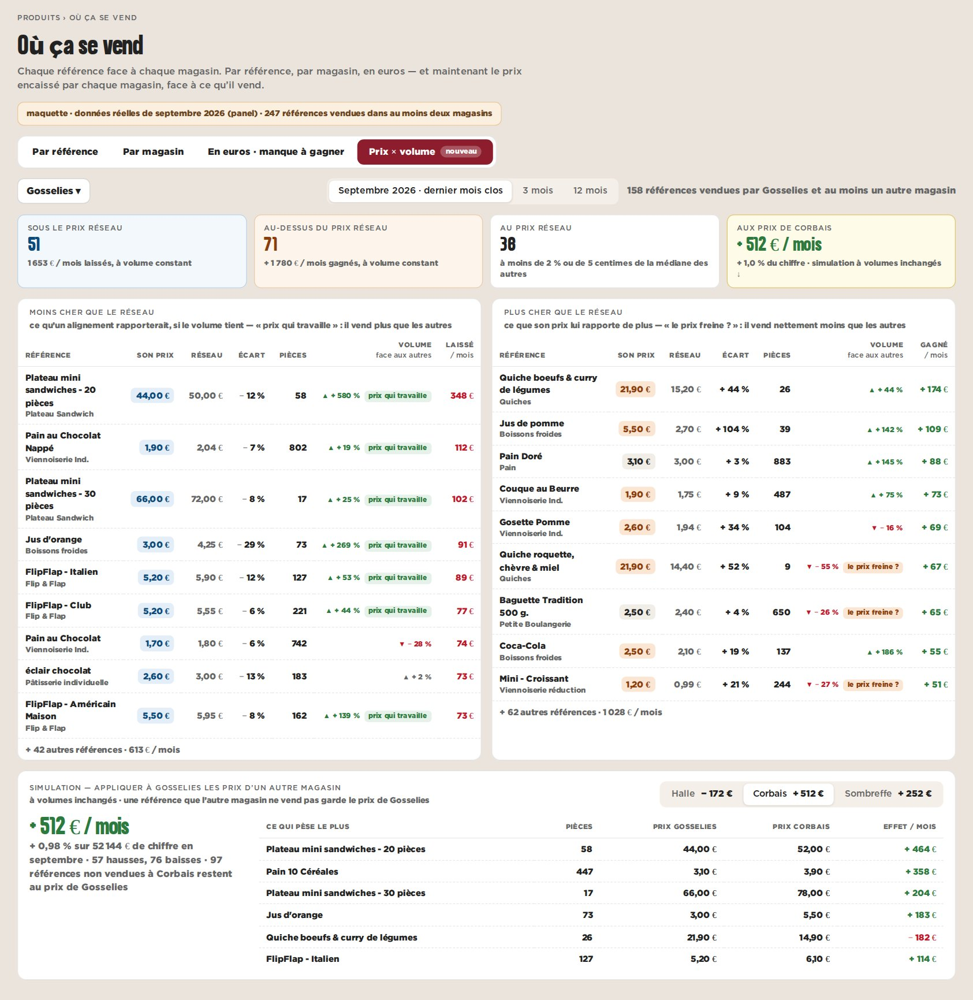

maquette · cockpit › Produits › Où ça se vend › Prix × volume · septembre 2026 · données réelles du panel
C — Par magasin : ses prix dans les deux sens, et la simulation
On choisit un magasin : ce qu’il vend moins cher que le réseau (et ce que ça lui coûte), ce qu’il vend plus cher (et ce que ça lui rapporte), avec un signal quand le volume suit ou décroche. En bas : « si Gosselies appliquait les prix de Corbais ».
Pour
- Le prolongement naturel de l’étape « Prix » de l’Analyse magasin, mais dans les deux sens et à jour (panel).
- Branche le calcul « aux prix de » déjà présent côté serveur.
- Prêt pour la visite : une page par magasin.
Contre
- Un magasin à la fois.
- La simulation suppose des volumes inchangés.
